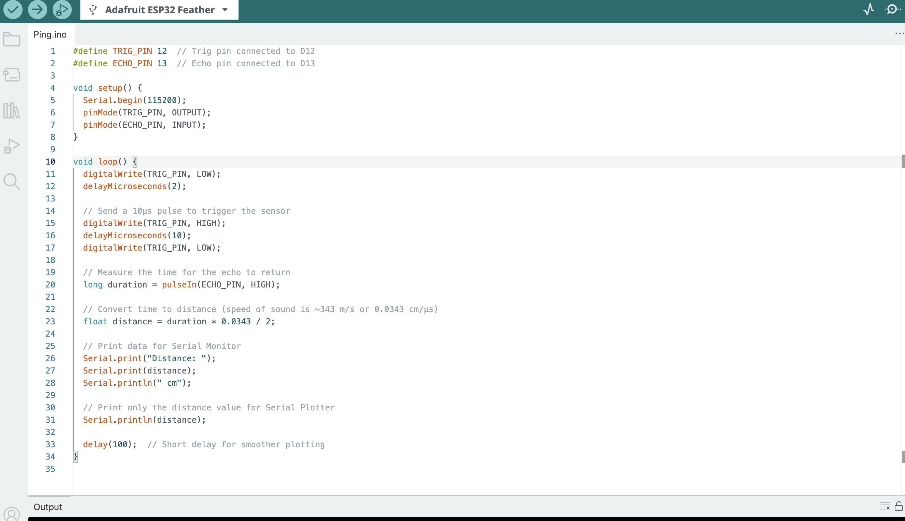
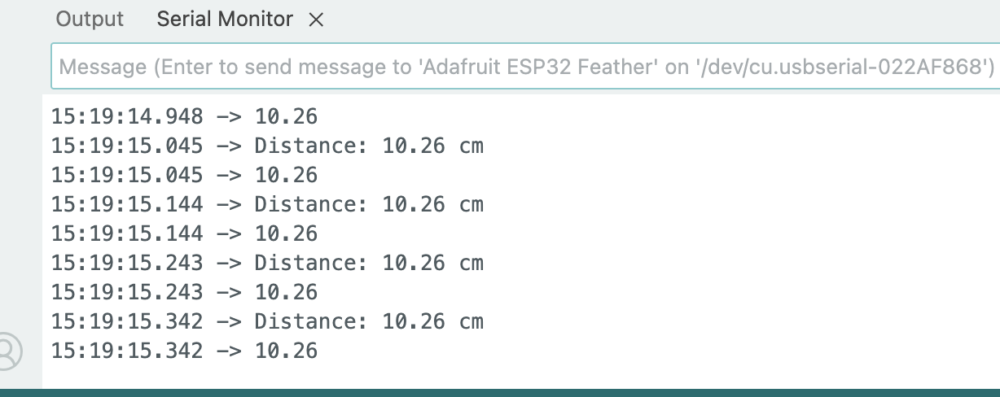
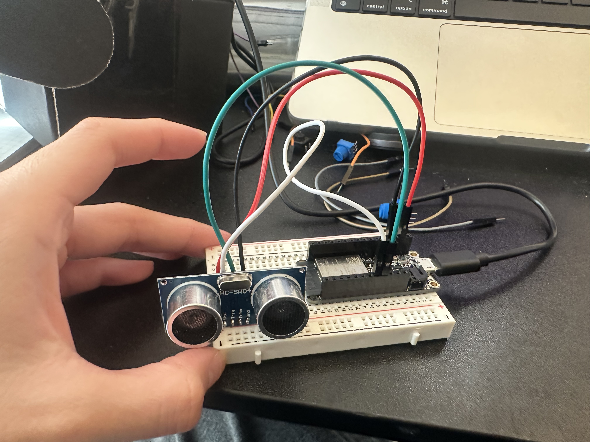
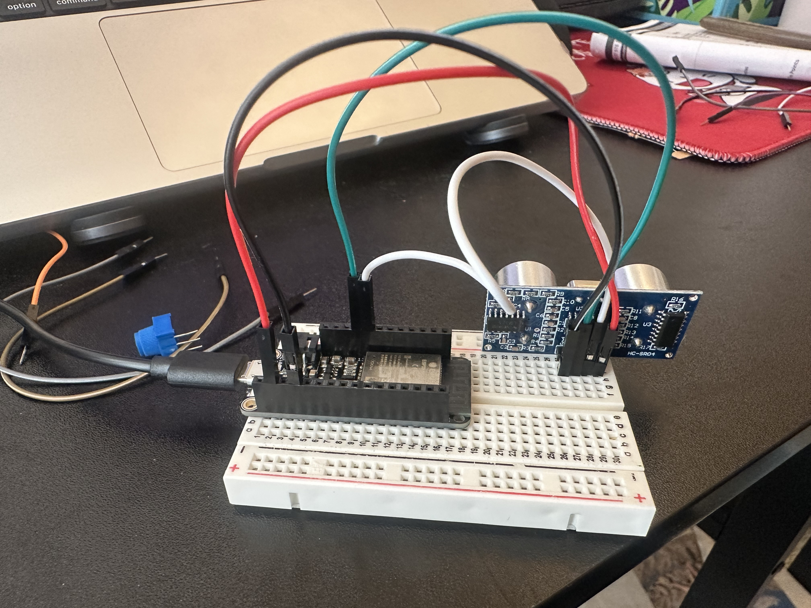

1.My Process First, I connected VCC and GND to my esp32, then I connected Trig with D12, while Echo connected to D13. This would connects my sensor to my board. Then in the code, I set up the Trig as output, Echo as input, then I can measure the time for the echo to return and print data for Serial Monitor. I watched two tutorials, but the first data is very slow and stuck, and it's hard to see the distance changing. I believe it's the code that's causing the problem. However, the second try turns out up okay.
My reference tutorial: https://www.youtube.com/watch?v=M71b6P6-LSo&t=38s
2. Code  
3. How I connected the sensor to my board?  